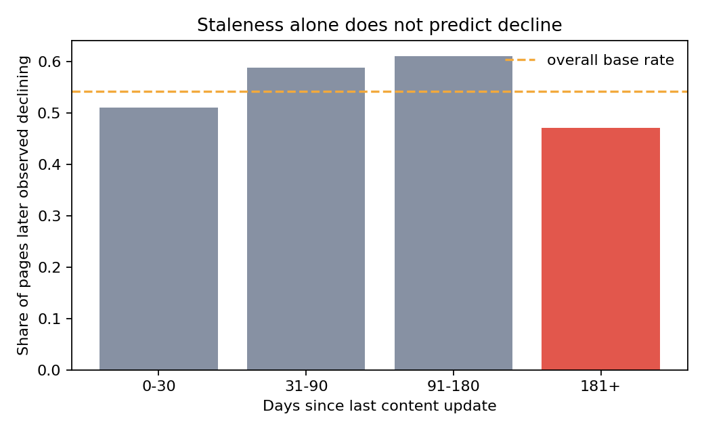
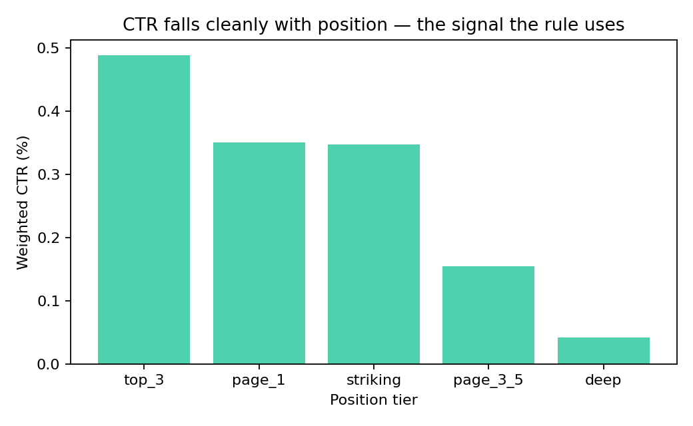
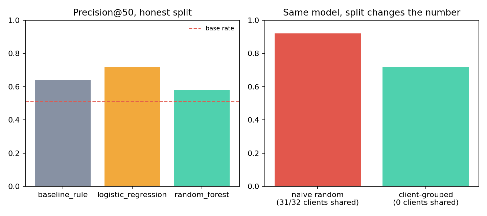
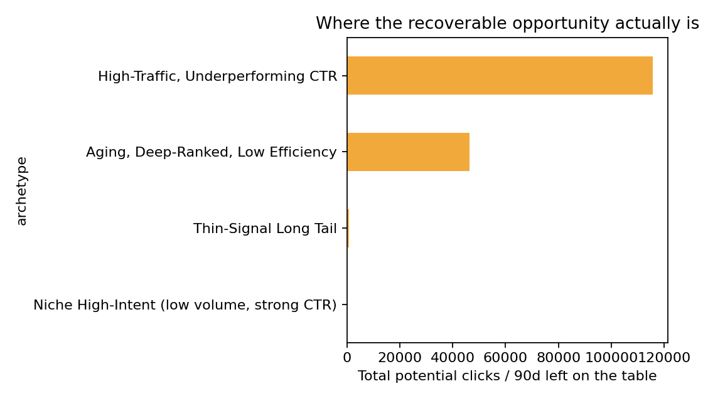

Refresh before you're told to.
Why staleness isn't the signal.
A content-refresh prioritization study on 30,000 pages across 32 clients — where the obvious rule (old page → declining page) fails on real data, what actually predicts decline, and what a careless train/test split silently cost the result.
Abstract
Question: among thousands of indexed pages, which ones should a content team review first — and can a simple "it's old, refresh it" rule be trusted to rank them? Data: 30,000 anonymized pages across 32 clients, 90-day search and engagement metrics, from FlyRank's ML internship warehouse release. Method: a transparent CTR-gap-vs-position-tier rule as the baseline, compared against a logistic regression and a random forest under a client-grouped validation split, with an explicit leakage audit.
Result: staleness alone does not predict decline on this data — the oldest pages had the lowest decline rate, not the highest — while a CTR-vs-position gap does; logistic regression beat the rule baseline under honest validation (precision@50 of 0.72 vs. 0.64), but the same model would have scored 0.92 under a careless, ungrouped split — a 20-point difference in interpretation caused entirely by validation design, not modeling skill. Use: a ranked, reason-coded action queue for human content reviewers — decision-support, not an autonomous or causal system.
Introduction
A content team with limited review capacity needs an ordered queue — not a rule of thumb that turns out to be wrong.
The default instinct on any content team is calendar-based: if a page hasn't been touched in six months, put it on the refresh list. It's simple, defensible, and — on this dataset — not actually true. This project set out to build a defensible refresh-priority model, and the first real result was catching that instinct failing before it shipped.
The decision this work supports is narrow on purpose: given a fixed amount of reviewer time, which pages earn a look first, and why — in language a reviewer can check against the page themselves, not a black-box score they have to trust blindly.
Data
A 30,000-row anonymized slice of FlyRank's central_data_warehouse release (starter dataset), used under the lane guide's Applied Search Intelligence track. Each row is one pseudonymized content item with 90-day trailing search and engagement metrics.
Excluded, on purpose: trend_direction and trend_pct — the columns the label itself is built from — never enter any feature list. No product decision flags (health scores, priority tags) exist in this release at all. No raw client names, domains, URLs, or query text appear anywhere in this dataset, this paper, or its repo.
Methodology
Baseline (transparent rule): a page is flagged if it's visible (≥300 impressions/90d) and its click-through rate sits well below what pages at its own position tier typically earn — a benchmark computed from the tier's own weighted CTR. One score, one reason code, one action label per row.
Model: logistic regression (and, for comparison, a random forest), trained on 18 numeric and 8 categorical observable-signal features — explicitly excluding the label's own source columns.
Validation design: GroupShuffleSplit grouped by client — 20% of clients held out entirely, zero client overlap between train and test — because pages from the same client share templates and site-wide factors a row-level split would let leak across the split.
Leakage checks: an assert that no label-source column reaches the feature list; an empirical with/without test on features whose 90-day window structurally overlaps the label's own 30-day trend window; and a direct naive-vs-grouped split comparison, to measure rather than assume the cost of getting validation wrong.
Results
The obvious rule fails first — that's the finding worth leading with.


| Method | Precision@50 | Precision@200 | AUC |
|---|---|---|---|
| Base rate | 0.51 | 0.51 | — |
| Rule baseline | 0.64 | 0.66 | 0.545 |
| Logistic regression | 0.72 | 0.71 | 0.616 |
| Random forest | 0.58 | 0.58 | 0.610 |

That second chart is arguably the more important result. It's not a comparison of two models — it's the same model, told two different stories depending on how the split was drawn. Reporting 0.92 without checking for client overlap would have been a confident, well-formatted, and wrong number.
Limitations & honest framing
- Starter dataset, not the full warehouse. 30,000 rows across 32 clients — not FlyRank's ~79M-row production fact table. Treat this as a methodology demonstration to re-earn at full scale, not a production result.
- Content-type coverage gap. This split's holdout happened to contain zero
feedly article/comparison articlerows — validated numbers apply tokeyword articlepages only. - Partial, disclosed feature-window overlap. Some numeric features structurally overlap the label's own 30-day window. Removing them drops AUC from 0.616 to 0.549 — a real but moderate effect, not catastrophic leakage, but the 0.72 precision@50 is a soft upper bound, not a leakage-free estimate.
- No causal claim. This is a ranking for review priority, not a prediction that any specific page will decline, and not a guarantee that refreshing it will recover traffic.
- Single 90-day snapshot per row. No true time series exists in this slice — no seasonality or algorithm-update detection was possible.
Ranked recommendations
The deterministic rule stays the primary, explainable driver of the queue; the model is a cross-check, not a replacement. Four content archetypes (K-Means) group pages into recognizable types with their own typical action.

High-Traffic, Underperforming CTR
Big audience already arriving, CTR far below the tier benchmark. Largest recoverable-click pool by a wide margin.
start here — refresh_nowAging, Deep-Ranked, Low Efficiency
Older pages ranked deep, modest traffic, weak efficiency. Often a better candidate for consolidation than a rewrite.
review_soon — human callNiche High-Intent
Low volume, unusually strong CTR. Already efficient for its size.
no_actionThin-Signal Long Tail
Too little volume for the gap to matter either way.
no_actionHuman review required before acting:
- Confirm no SERP feature (snippet, AI overview) above the result is absorbing clicks a title/meta fix can't win back.
- Confirm the page is still indexed and crawlable — a 0% CTR can be a technical issue, not a content one.
- Check whether several flagged pages share one client before treating each as an independent content problem.
Never automated from this queue:
- Publishing a rewritten title, meta description, or body copy without an editor's sign-off.
- Deleting, de-indexing, or redirecting a page directly from this output.
- Sending client-facing reports or messages built from these numbers without review.
Reproducibility
Every number and chart on this page is generated by work/notebooks/capstone.ipynb in the repo below, which itself builds on four weekly notebooks — each independently executed with zero errors, each one step of this project's actual audit trail.
- Repositorygithub.com/AhmedElgharably/flyrank-ml-internship
- Baseline rule + signal auditw04_baseline_score.ipynb
- Model + honest splitw05_model.ipynb
- Validation & leakage auditw06_validation_audit.ipynb
- Action playbookw07_action_playbook.ipynb
- This paper's sourcecapstone.ipynb
- Random seed42, fixed everywhere above